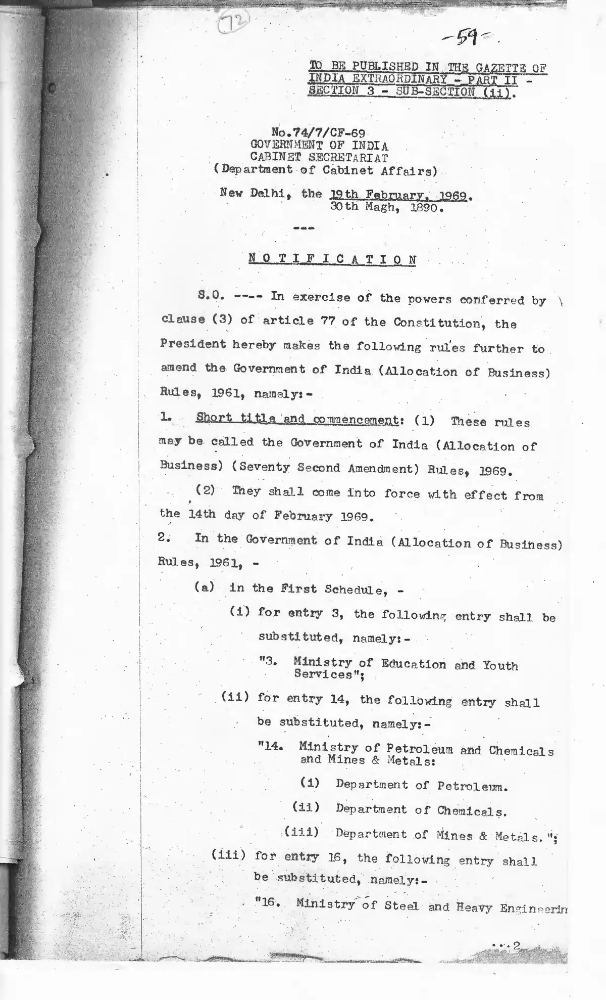
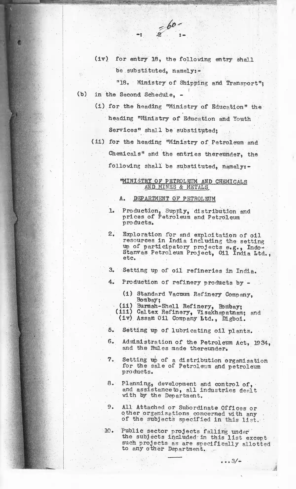
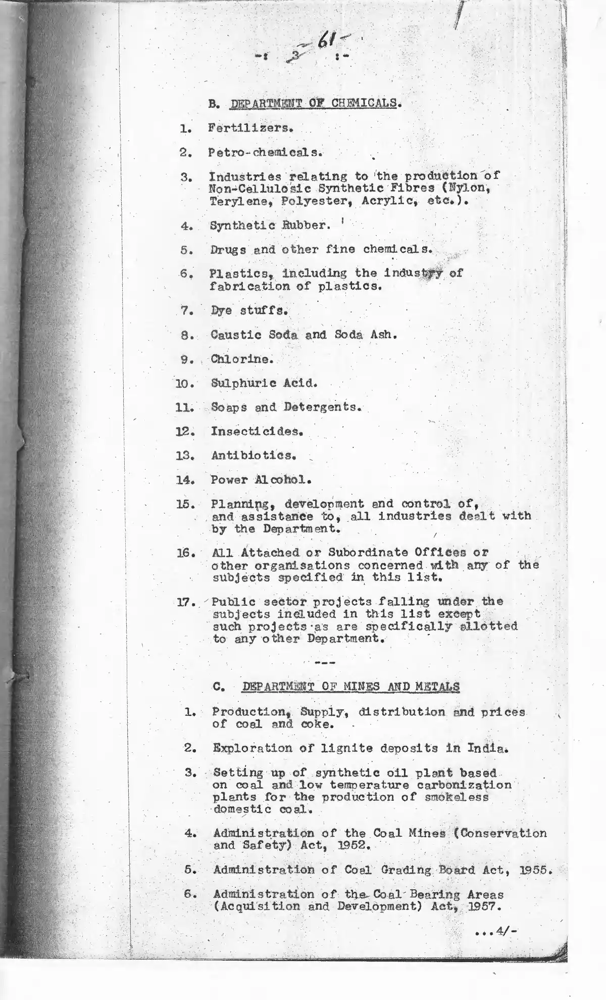
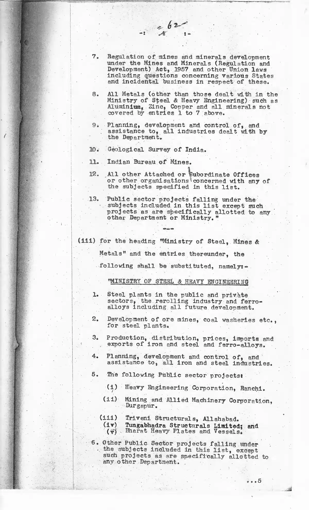
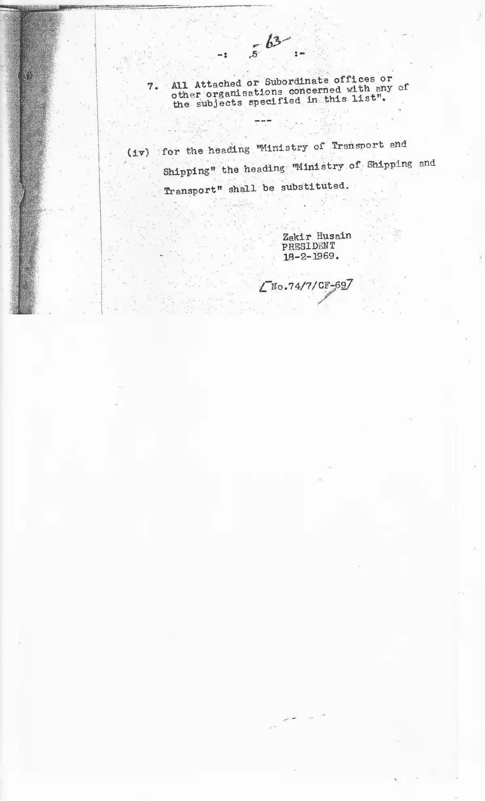

Amendment #72 (S.O. 730, 1969)
8 changes: 4 to the First Schedule, 4 to the Second Schedule. 8 applied
What it did to the ministries
- splitMinistry of Steel, Mines & Metals splits into Ministry of Petroleum and Chemicals and Mines & Metals (12) and Ministry of Steel and Heavy Engineerin (6) change 2, 3, 6, 7 · histories: Steel, Mines & Metals, Petroleum and Chemicals and Mines & Metals, Steel and Heavy Engineering
- absorbedMinistry of Petroleum & Chemicals joins Ministry of Petroleum and Chemicals and Mines & Metals (26 subjects) change 2, 6 · histories: Petroleum & Chemicals, Petroleum and Chemicals and Mines & Metals
- renamedMinistry of Education is renamed Ministry of Education and Youth Services change 1, 5 · histories: Education and Youth Services
- renamedMinistry of Transport & Shipping is renamed Ministry of Shipping and Transport change 4, 8 · histories: Shipping and Transport
The order, page by page
Page 1 of 5

123Schedule 1 › entry 3
- 3. Ministry of Education and Youth Services
applied at schedule 1 › ministry 3 in the Rules after #72
Schedule 1 › entry 14
- 14. Ministry of Petroleum and Chemicals and Mines & Metals:
- i. Department of Petroleum.
- ii. Department of Chemicals.
- iii. Department of Mines & Metals.
applied at schedule 1 › ministry 14 in the Rules after #72
Schedule 1 › entry 16
- 16. Ministry of Steel and Heavy Engineerin
applied at schedule 1 › ministry 16 in the Rules after #72
Page 2 of 5

456Schedule 1 › entry 18
- 18. Ministry of Shipping and Transport
applied at schedule 1 › ministry 18 in the Rules after #72
Schedule 2 › Ministry of Education
- Ministry of Education and Youth Services
applied at schedule 2 › ministry Ministry of Education and Youth Services in the Rules after #72
read hindi missing
Schedule 2 › Ministry of Petroleum and Chemicals
- MINISTRY OF PETROLEUM AND CHEMICALS AND MINES & METALS
- A. DEPARTMENT OF PETROLEUM
- 1. Production, Supply, distribution and prices of Petroleum and Petroleum products.
- 2. Exploration for and exploitation of oil resources in India including the setting up of participatory projects e.g., Indo- Stanvas Petroleum Project, 011 India Ltd. etc.
- 3. Setting up of oil refineries in India.
- 4. Production of refinery products by (1) Standard Vacuum Refinery Company Bombay (11) Burmah-Shell Refinery, Bombay
and 39 more
- iii. Caltex Refinery, Visakhapatnam; and
- iv. Assam Oil Company Ltd., Digboi.
- 5. Setting up of lubricating oil plants.
- 6. Administration of the Petroleum Act, 1934 and the Rules made thereunder.
- 7. Setting up of a distribution organisation for the sale of Petroleum and petroleum products.
- 8. Planning, development and control of and assistance to, all industries dealt with by the Department.
- 9. All Attached or Subordinate Offices or other organisations concerned with any of the subjects specified in this list.
- 10. Public sector projects falling under the subjects included in this list except such projects as are specifically allotted to any other Department. 3/-
- B. DEPARTMENT OF CHEMICALS.
- 1. Fertilizers.
- 2. Petro-chemicals.
- 3. Industries relating to the production of Non-Cellulosic Synthetic Fibres (Nylon Terylene, Polyester, Acrylic, etc.).
- 4. Synthetic Rubber.
- 5. Drugs and other fine chemicals.
- 6. Plastics, including the industry of fabrication of plastics.
- 7. Dye stuffs.
- 8. Caustic Soda and Soda Ash.
- 9. Chlorine.
- 10. Sulphuric Acid.
- 11. Soaps and Detergents.
- 12. Insecticides.
- 13. Antibiotics.
- 14. Power Alcohol.
- 15. Planning, development and control of and assistance to, all industries dealt with by the Department.
- 16. All Attached or Subordinate Offices or other organisations concerned with any of the subjects specified in this list.
- 17. Public sector projects falling under the subjects included in this list except such projects as are specifically allotted to any other Department.
- C. DEPARTMENT OF MINES AND METALS
- 1. Production, Supply, distribution and prices of coal and coke.
- 2. Exploration of lignite deposits in India.
- 3. Setting up of synthetic oil plant based on coal and low temperature carbonization plants for the production of smokeless domestic coal.
- 4. Administration of the Coal Mines (Conservation and Safety) Act, 1952.
- 5. Administration of Coal Grading Board Act, 1955.
- 6. Administration of the Coal Bearing Areas (Acquisition and Development) Act, 1957. 4/
- 7. Regulation of mines and minerals development under the Mines and Minerals (Regulation and Development) Act, 1957 and other Union laws including questions concerning various States and incidental business in respect of these.
- 8. All Metals (other than those dealt with in the Ministry of Steel & Heavy Engineering) such as Aluminium, Zinc, Copper and all : minerals not covered by entries 1 to 7 above.
- 9. Planning, development and control of, and assistance to, all industries dealt with by the Department. 10% Geological Survey of India.
- 11. Indian Bureau of Mines.
- 12. All other Attached or Bubordinate Offices or other organisations concerned with any of the subjects specified in this list.
- 13. Public sector projects falling under the subjects included in this list except such projects as are specifically allotted to any other Department or Ministry.
applied at schedule 2 › ministry MINISTRY OF PETROLEUM & CHEMICALS in the Rules after #72
read hindi missing, read page break
Page 3 of 5

Page 4 of 5

7Schedule 2 › Ministry of Steel, Mines & Metals
- MINISTRY OF STEEL & HEAVY ENGINEERING
- 1. Steel plants in the public and private sectors, the rerolling industry and ferroalloys including all future development.
- 2. Development of ore mines, coal washeries etc. for steel plants.
- 3. Production, distribution, prices, imports and exports of iron and steel and ferro-alloys.
- 4. Planning, development and control of, and assistance to, all iron and steel industries.
- 5. The following Public sector projectst (1) Heavy Engineering Corporation, Ranchi.
and 6 more
- ii. Mining and Allied Machinery Corporation Durgapur.
- iii. Triveni Structurals, Allahabad.
- iv. Tungabhadra Structurals Limited; and
- v. Bharat Heavy Plates and Vessels.
- 6. Other Public Sector projects falling under the subjects included in this list, except such projects as are specifically allotted to any other Department.
- 7. All Attached or Subordinate offices or other organisations concerned with any of the subjects specified in this list
applied at schedule 2 › ministry MINISTRY OF STEEL, MINES & METALS in the Rules after #72
read hindi missing, read page break
Page 5 of 5

8Schedule 2 › Ministry of Transport and Shipping
- Ministry of Shipping and Transport
applied at schedule 2 › ministry Ministry of Shipping and Transport in the Rules after #72
read hindi missing
How this document was read
Edits to the reading
| Date | By | Edit | Before → after |
|---|---|---|---|
| 12 November 2026 | claude | word corrected | |
| 12 November 2026 | claude | word corrected | |
| 12 November 2026 | claude | word corrected | |
| 14 November 2026 | mukundesh | word removed | |
| 14 November 2026 | mukundesh | word corrected |
From the Government of India (Allocation of Business) Rules, 1961 and their amendments, as published by the Cabinet Secretariat (cabsec.gov.in), read by orgpedia. The readings of the older scanned gazettes have known gaps.